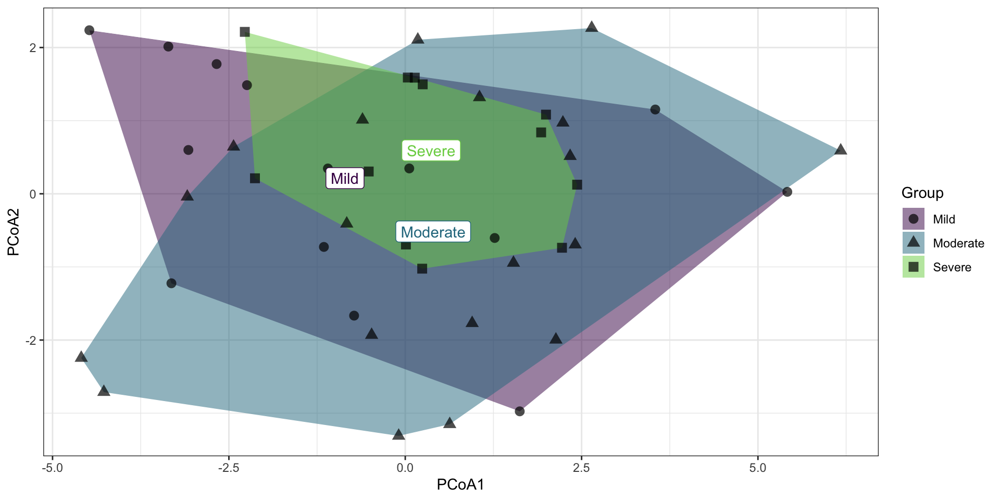
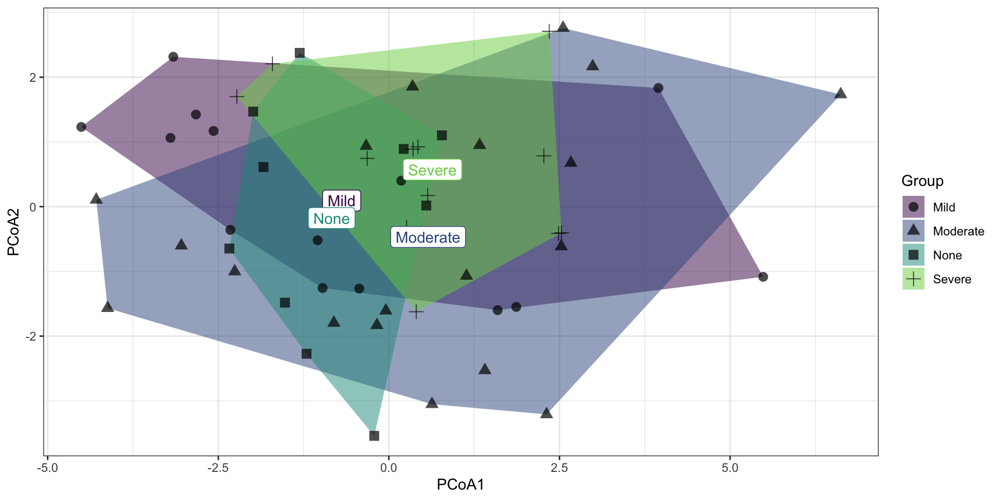
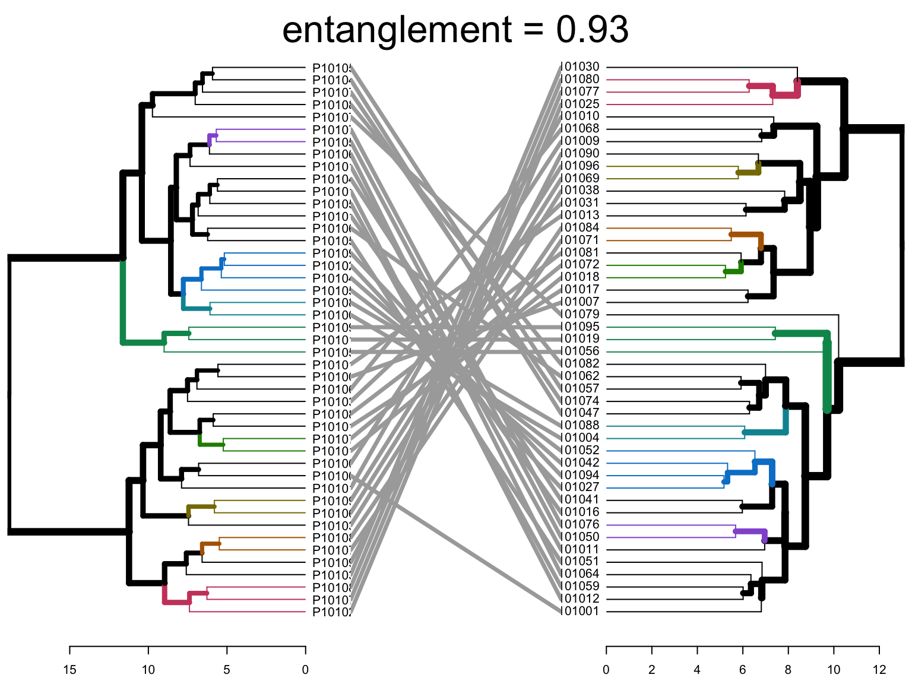
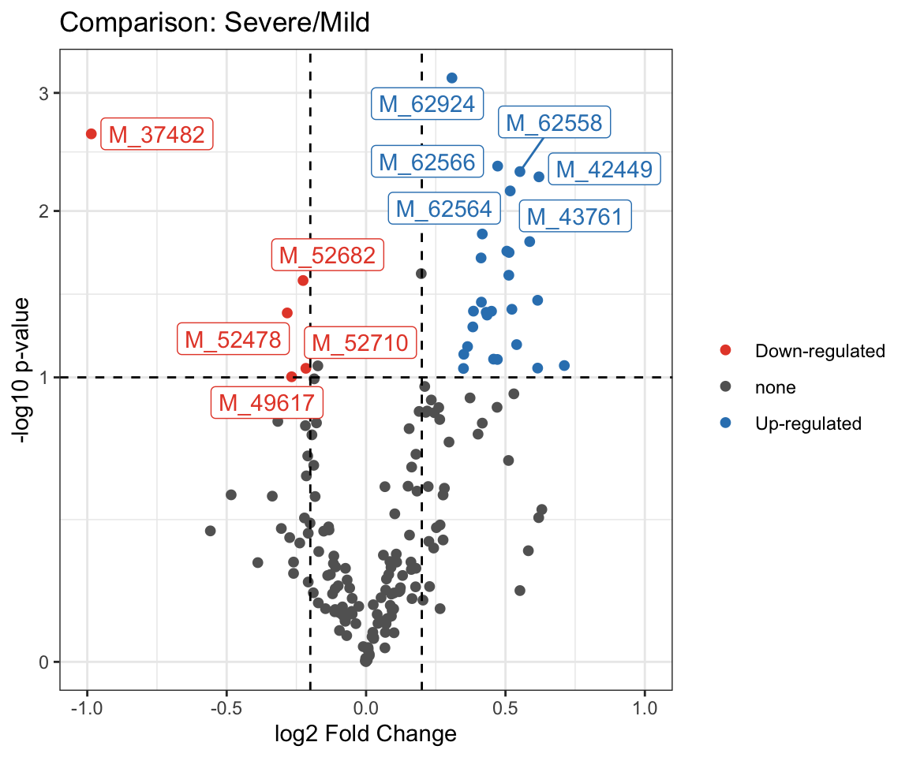

Chapter 2 Statistical Analysis
Although the horrible experience of data analysis by using MetaboAnalystR R package (Pang et al. 2020), its thought of data processing are very useful. Therefore, this template is based on the workflow from MetaboAnalystR.
In this chapter, very detailed explaination of the available methods in each step in Statistical Analysis would be introduced. Users can nevertheless go through the whole analysis from with example data in Chapter 4.
2.1 Data Preprocessing
We integrated R packages and our own scripts to build the data analysis template for metabolomics data. Particularly, we thanks very much for POMA R package (Castellano-Escuder et al. 2021). POMA is a flexible data cleaning and statistical analysis processes in one comprehensible and user-friendly R package.
Note: Please remember to preprocess your data before Cluster Analysis and other steps below.
2.1.1 Environment setup
knitr::opts_chunk$set(warning = F)
library(dplyr)
library(tibble)
library(POMA)
library(ggplot2)
library(ggraph)
library(plotly)
library(readxl)
library(SummarizedExperiment)
# rm(list = ls())
options(stringsAsFactors = F)
options(future.globals.maxSize = 1000 * 1024^2)2.1.2 Loading data
The dataset is from the Zeybel-2022 published paper (Zeybel et al. 2022).
- features table
profile <- readxl::read_xlsx("./dataset/OmicsDataSet-Zeybel-2022.xlsx", sheet = 6)
head(profile)## # A tibble: 6 × 67
## BIOCHEMICAL `SUPER PATHWAY` `SUB PATHWAY` `COMP ID` PLATFORM `CHEMICAL ID` RI MASS PUBCHEM CAS KEGG `SampleID HMDB…` P101001 P101012 P101030 P101031 P101050 P101059 P101071 P101072 P101084
## <chr> <chr> <chr> <dbl> <chr> <dbl> <dbl> <dbl> <chr> <chr> <chr> <chr> <dbl> <dbl> <dbl> <dbl> <dbl> <dbl> <dbl> <dbl> <dbl>
## 1 (14 or 15)-methyl… Lipid Fatty Acid, … 38768 LC/MS N… 100002945 5695 269. 8181;1… <NA> C169… HMDB0061859 5.11e7 5.12e7 3.84e7 5.91e7 2.20e7 2.26e7 3.24e7 3.42e7 2.91e7
## 2 (16 or 17)-methyl… Lipid Fatty Acid, … 38296 LC/MS N… 100002356 5993 297. 3083779 2724… <NA> HMDB0037397 5.11e6 6.00e6 2.86e6 4.72e6 2.90e6 2.20e6 3.00e6 4.68e6 3.65e6
## 3 (2 or 3)-decenoat… Lipid Medium Chain… 63436 LC/MS N… 100021502 4990 169. <NA> <NA> <NA> <NA> 7.57e5 5.98e5 3.67e5 5.12e5 3.17e5 7.35e5 5.97e5 3.17e5 4.97e5
## 4 (2,4 or 2,5)-dime… Xenobiotics Food Compone… 62533 LC/MS N… 100020519 3474 201. <NA> <NA> <NA> <NA> NA NA 5.64e5 7.38e4 1.14e5 NA NA 6.80e5 NA
## 5 (N(1) + N(8))-ace… Amino Acid Polyamine Me… 57814 LC/MS P… 100016038 3080 188. 123689… <NA> C006… HMDB0001276,HMD… 2.82e5 2.49e5 2.31e5 3.15e5 2.54e5 1.82e5 4.12e5 3.36e5 2.28e5
## 6 (R)-3-hydroxybuty… Lipid Fatty Acid M… 43264 LC/MS P… 100003926 2400 248. 534816… <NA> <NA> HMDB0013127 NA NA NA NA 1.27e5 NA NA 1.23e5 2.01e5
## # … with 46 more variables: P101003 <dbl>, P101004 <dbl>, P101013 <dbl>, P101016 <dbl>, P101017 <dbl>, P101038 <dbl>, P101051 <dbl>, P101061 <dbl>, P101062 <dbl>, P101074 <dbl>, P101075 <dbl>,
## # P101076 <dbl>, P101085 <dbl>, P101088 <dbl>, P101007 <dbl>, P101018 <dbl>, P101019 <dbl>, P101041 <dbl>, P101052 <dbl>, P101064 <dbl>, P101065 <dbl>, P101077 <dbl>, P101090 <dbl>, P101094 <dbl>,
## # P101009 <dbl>, P101010 <dbl>, P101021 <dbl>, P101022 <dbl>, P101042 <dbl>, P101054 <dbl>, P101056 <dbl>, P101067 <dbl>, P101068 <dbl>, P101079 <dbl>, P101095 <dbl>, P101096 <dbl>, P101011 <dbl>,
## # P101024 <dbl>, P101025 <dbl>, P101027 <dbl>, P101047 <dbl>, P101057 <dbl>, P101069 <dbl>, P101080 <dbl>, P101081 <dbl>, P101082 <dbl>- metadata table
metadata <- readxl::read_xlsx("./dataset/OmicsDataSet-Zeybel-2022.xlsx", sheet = 2)
head(metadata)## # A tibble: 6 × 11
## PatientID Stage Metabolomics Proteomics GutMetagenomics OralMetagenomics LiverFatClass Gender AlcoholConsumption Smoker Age
## <chr> <chr> <chr> <chr> <chr> <chr> <chr> <chr> <chr> <chr> <dbl>
## 1 P101001 Before Send Send Send Send Severe Male No No 52
## 2 P101003 Before Send Send Send Send None Female No No 31
## 3 P101004 Before Send Send Send Send Moderate Male Yes No 43
## 4 P101007 Before Send Send Send Send Severe Female No No 61
## 5 P101009 Before Send Send Send Send Moderate Male No Yes 51
## 6 P101010 Before Send Send Send Send Mild Male Yes No 27- Data Preparation: SummarizedExperiment object
getSEobject <- function(x, y) {
target <- x %>%
dplyr::mutate(Metabolomics == "Send") %>%
dplyr::select(PatientID, LiverFatClass, Gender, Smoker, Age, AlcoholConsumption)
sid <- intersect(target$PatientID, colnames(profile))
features <- y %>%
dplyr::select(all_of(sid)) %>%
data.frame() %>% t()
colnames(features) <- paste0("M_", profile$`COMP ID`)
target <- target[pmatch(sid, target$PatientID), , F]
res <- PomaSummarizedExperiment(target = target,
features = features)
return(res)
}
se <- getSEobject(metadata, profile)
se## class: SummarizedExperiment
## dim: 1032 55
## metadata(0):
## assays(1): ''
## rownames(1032): M_38768 M_38296 ... M_57517 M_15581
## rowData names(0):
## colnames(55): P101001 P101003 ... P101095 P101096
## colData names(5): group Gender Smoker Age AlcoholConsumption- Extract data for test dataset
get_testData <- function(object, num = 200) {
features_tab <- SummarizedExperiment::assay(object) %>%
t()
metadata_tab <- SummarizedExperiment::colData(object) %>%
data.frame() %>%
tibble::rownames_to_column("ID")
res <- PomaSummarizedExperiment(target = metadata_tab,
features = features_tab[, 1:num])
return(res)
}
se <- get_testData(object = se)
se## class: SummarizedExperiment
## dim: 200 55
## metadata(0):
## assays(1): ''
## rownames(200): M_38768 M_38296 ... M_31787 M_63361
## rowData names(0):
## colnames(55): P101001 P101003 ... P101095 P101096
## colData names(5): group Gender Smoker Age AlcoholConsumption2.1.3 Data Checking
Features in PomaSummarizedExperiment object must have the following criterion:
All data values are numeric.
A total of 0 (0%) missing values were detected.
CheckData <- function(object) {
features_tab <- SummarizedExperiment::assay(object)
# numeric & missing values
int_mat <- features_tab
rowNms <- rownames(int_mat)
colNms <- colnames(int_mat)
naNms <- sum(is.na(int_mat))
for (i in 1:ncol(int_mat)) {
if (class(int_mat[, i]) == "integer64") {
int_mat[, i] <- as.double(int_mat[, i])
}
}
num_mat <- apply(int_mat, 2, as.numeric)
if (sum(is.na(num_mat)) > naNms) {
num_mat <- apply(int_mat, 2, function(x) as.numeric(gsub(",", "", x)))
if (sum(is.na(num_mat)) > naNms) {
message("<font color=\"red\">Non-numeric values were found and replaced by NA.</font>")
} else {
message("All data values are numeric.")
}
} else {
message("All data values are numeric.")
}
int_mat <- num_mat
rownames(int_mat) <- rowNms
colnames(int_mat) <- colNms
varCol <- apply(int_mat, 2, var, na.rm = T)
constCol <- (varCol == 0 | is.na(varCol))
constNum <- sum(constCol, na.rm = T)
if (constNum > 0) {
message(paste("<font color=\"red\">", constNum,
"features with a constant or single value across samples were found and deleted.</font>"))
int_mat <- int_mat[, !constCol, drop = FALSE]
}
totalCount <- nrow(int_mat) * ncol(int_mat)
naCount <- sum(is.na(int_mat))
naPercent <- round(100 * naCount/totalCount, 1)
message(paste("A total of ", naCount, " (", naPercent,
"%) missing values were detected.", sep = ""))
# save int_mat into se object
target <- SummarizedExperiment::colData(object) %>%
data.frame() %>%
tibble::rownames_to_column("SampleID")
res <- PomaSummarizedExperiment(target = target,
features = t(int_mat))
return(res)
}
se <- CheckData(object = se)## All data values are numeric.## A total of 1146 (10.4%) missing values were detected.se## class: SummarizedExperiment
## dim: 200 55
## metadata(0):
## assays(1): ''
## rownames(200): M_38768 M_38296 ... M_31787 M_63361
## rowData names(0):
## colnames(55): P101001 P101003 ... P101095 P101096
## colData names(5): group Gender Smoker Age AlcoholConsumption2.1.4 Data Filtering
The purpose of the data filtering is to identify and remove variables that are unlikely to be of use when modeling the data. No phenotype information are used in the filtering process, so the result can be used with any downstream analysis. This step is strongly recommended for untargeted metabolomics datasets (i.e. spectral binning data, peak lists) with large number of variables, many of them are from baseline noises. Filtering can usually improve the results. For details, please refer to the paper by Hackstadt, et al.
Non-informative variables can be characterized in three groups: 1) variables of very small values (close to baseline or detection limit) - these variables can be detected using mean or median; 2) variables that are near-constant values throughout the experiment conditions (housekeeping or homeostasis) - these variables can be detected using standard deviation (SD); or the robust estimate such as interquantile range (IQR); and 3) variables that show low repeatability - this can be measured using QC samples using the relative standard deviation(RSD = SD/mean). Features with high percent RSD should be removed from the subsequent analysis (the suggested threshold is 20% for LC-MS and 30% for GC-MS). For data filtering based on the first two categories, the following empirical rules are applied during data filtering:
- Less than 250 variables: 5% will be filtered;
- Between 250 - 500 variables: 10% will be filtered;
- Between 500 - 1000 variables: 25% will be filtered;
- Over 1000 variables: 40% will be filtered;
Filtering features if their RSDs are > 25% in QC samples
Interquantile range (IQR)
Standard deviation (SD)
Median absolute deviation (MAD)
Relative standard deviation (RSD = SD/mean)
Non-parametric relative standard deviation (MAD/median)
Mean intensity value
Median intensity value
FilterFeature <- function(
object,
qc_label,
method = c("none", "iqr", "rsd",
"nrsd", "mean", "sd",
"mad", "median"),
rsd_cutoff = 25) {
features_tab <- SummarizedExperiment::assay(object)
metadata_tab <- SummarizedExperiment::colData(object)
# QC samples
qc_samples <- metadata_tab %>% data.frame() %>%
dplyr::filter(group == qc_label)
if (dim(qc_samples)[1] == 0) {
stop("No qc samples have been chosen, please check your input")
}
# QC samples' feature table
qc_feature <- features_tab[, colnames(features_tab)%in%rownames(qc_samples)] %>%
t()
# filter features by QC RSD
rsd <- rsd_cutoff / 100
sds <- apply(qc_feature, 2, sd, na.rm = T)
mns <- apply(qc_feature, 2, mean, na.rm = T)
rsd_vals <- abs(sds/mns) %>% na.omit()
gd_inx <- rsd_vals < rsd
int_mat <- features_tab[gd_inx, ]
message("Removed ", (dim(qc_feature)[2] - dim(int_mat)[1]),
" features based on QC RSD values. QC samples are excluded from downstream functional analysis.")
# whether to filter features by percentage according to the number
PerformFeatureFilter <- function(datMatrix,
qc_method = method,
remain_num = NULL) {
dat <- datMatrix
feat_num <- ncol(dat)
feat_nms <- colnames(dat)
nm <- NULL
if (qc_method == "none" && feat_num < 5000) { # only allow for less than 4000
remain <- rep(TRUE, feat_num)
nm <- "No filtering was applied"
} else {
if (qc_method == "rsd"){
sds <- apply(dat, 2, sd, na.rm = T)
mns <- apply(dat, 2, mean, na.rm = T)
filter_val <- abs(sds/mns)
nm <- "Relative standard deviation"
} else if (qc_method == "nrsd" ) {
mads <- apply(dat, 2, mad, na.rm = T)
meds <- apply(dat, 2, median, na.rm = T)
filter_val <- abs(mads/meds)
nm <- "Non-paramatric relative standard deviation"
} else if (qc_method == "mean") {
filter_val <- apply(dat, 2, mean, na.rm = T)
nm <- "mean"
} else if (qc_method == "sd") {
filter_val <- apply(dat, 2, sd, na.rm = T)
nm <- "standard deviation"
} else if (qc_method == "mad") {
filter_val <- apply(dat, 2, mad, na.rm = T)
nm <- "Median absolute deviation"
} else if (qc_method == "median") {
filter_val <- apply(dat, 2, median, na.rm = T)
nm <- "median"
} else if (qc_method == "iqr") { # iqr
filter_val <- apply(dat, 2, IQR, na.rm = T)
nm <- "Interquantile Range"
}
# get the rank of the filtered variables
rk <- rank(-filter_val, ties.method = "random")
if (is.null(remain_num)) { # apply empirical filtering based on data size
if (feat_num < 250) { # reduce 5%
remain <- rk < feat_num * 0.95
message("Further feature filtering based on ", nm)
} else if (feat_num < 500) { # reduce 10%
remain <- rk < feat_num * 0.9
message("Further feature filtering based on ", nm)
} else if (feat_num < 1000) { # reduce 25%
remain <- rk < feat_num * 0.75
message("Further feature filtering based on ", nm)
} else { # reduce 40%, if still over 5000, then only use top 5000
remain <- rk < feat_num * 0.6
message("Further feature filtering based on ", nm)
}
} else {
remain <- rk < remain_num
}
}
res <- datMatrix[, remain]
return(res)
}
feature_res <- PerformFeatureFilter(t(int_mat))
# remove QC samples
feature_final <- feature_res[!rownames(feature_res) %in% rownames(qc_samples), ]
# save int_mat into se object
target <- metadata_tab %>%
data.frame() %>%
tibble::rownames_to_column("SampleID") %>%
dplyr::filter(SampleID %in% rownames(feature_final))
res <- PomaSummarizedExperiment(target = target,
features = feature_final)
return(res)
}
se_filter <- FilterFeature(object = se,
qc_label = "None",
method = "iqr")## Removed 149 features based on QC RSD values. QC samples are excluded from downstream functional analysis.## Further feature filtering based on Interquantile Rangese_filter## class: SummarizedExperiment
## dim: 48 45
## metadata(0):
## assays(1): ''
## rownames(48): M_52603 M_19130 ... M_63681 M_63361
## rowData names(0):
## colnames(45): P101001 P101004 ... P101095 P101096
## colData names(5): group Gender Smoker Age AlcoholConsumption2.1.5 Missing Value Imputation
se_impute <- PomaImpute(
se_filter,
ZerosAsNA = TRUE,
RemoveNA = TRUE,
cutoff = 20,
method = "knn")
se_impute## class: SummarizedExperiment
## dim: 48 45
## metadata(0):
## assays(1): ''
## rownames(48): M_52603 M_19130 ... M_63681 M_63361
## rowData names(0):
## colnames(45): P101001 P101004 ... P101095 P101096
## colData names(5): group Gender Smoker Age AlcoholConsumption2.1.6 Data Normalization
The normalization procedures are grouped into three categories. You can use one or combine them to achieve better results.
Sample normalization is for general-purpose adjustment for systematic differences among samples;
Sample-specific normalization (i.e. weight, volume)
Normalization by sum
Normalization by median
Normalization by a reference sample (PQN)
Normalization by a pooled sample from group (group PQN)
Normalization by reference feature
Quantile normalization (suggested only for > 1000 features)
Data transformation applies a mathematical transformation on individual values themselves. A simple mathematical approach is used to deal with negative values in log and square root.
Log transformation (base 10)
Square root transformation (square root of data values)
Cube root transformation (cube root of data values)
Data scaling adjusts each variable/feature by a scaling factor computed based on the dispersion of the variable.
Mean centering (mean-centered only)
Auto scaling (mean-centered and divided by the standard deviation of each variable)
Pareto scaling (mean-centered and divided by the square root of the standard deviation of each variable)
Range scaling (mean-centered and divided by the range of each variable)
2.1.6.1 Normalization by NormalizeData function
NormalizeData <- function(
object,
rowNorm = c("Quantile", "GroupPQN", "SamplePQN",
"CompNorm", "SumNorm", "MedianNorm",
"SpecNorm", "None"),
transNorm = c("LogNorm", "SrNorm", "CrNorm", "None"),
scaleNorm = c("MeanCenter", "AutoNorm", "ParetoNorm",
"RangeNorm", "None"),
ref = NULL,
SpeWeight = 1) {
features_tab <- SummarizedExperiment::assay(object)
metadata_tab <- SummarizedExperiment::colData(object)
data <- t(features_tab)
colNames <- colnames(data)
rowNames <- rownames(data)
#############################################
# Sample normalization
# perform quantile normalization on the raw data (can be log transformed later by user)
QuantileNormalize <- function(data) {
return(t(preprocessCore::normalize.quantiles(t(data), copy=FALSE)));
}
# normalize by a reference sample (probability quotient normalization)
# ref should be the name of the reference sample
ProbNorm <- function(x, ref_smpl) {
return(x/median(as.numeric(x/ref_smpl), na.rm = T))
}
# normalize by a reference reference (i.e. creatinine)
# ref should be the name of the cmpd
CompNorm <- function(x, ref) {
return(1000*x/x[ref])
}
SumNorm <- function(x) {
return(1000*x/sum(x, na.rm = T))
}
# normalize by median
MedianNorm <- function(x) {
return(x/median(x, na.rm = T))
}
# row-wise normalization
if (rowNorm == "Quantile") {
data <- QuantileNormalize(data)
# this can introduce constant variables if a variable is
# at the same rank across all samples (replaced by its average across all)
varCol <- apply(data, 2, var, na.rm = T)
constCol <- (varCol == 0 | is.na(varCol))
constNum <- sum(constCol, na.rm = T)
if (constNum > 0) {
message(paste("After quantile normalization", constNum,
"features with a constant value were found and deleted."))
data <- data[, !constCol, drop = FALSE]
colNames <- colnames(data)
rowNames <- rownames(data)
}
rownm <- "Quantile Normalization"
} else if (rowNorm == "GroupPQN") {
grp_inx <- metadata_tab$group == ref
ref.smpl <- apply(data[grp_inx, , drop = FALSE], 2, mean)
data <- t(apply(data, 1, ProbNorm, ref.smpl))
rownm <- "Probabilistic Quotient Normalization by a reference group"
} else if (rowNorm == "SamplePQN") {
ref.smpl <- data[ref, , drop = FALSE]
data <- t(apply(data, 1, ProbNorm, ref.smpl))
rownm <- "Probabilistic Quotient Normalization by a reference sample"
} else if (rowNorm == "CompNorm") {
data <- t(apply(t(data), 1, CompNorm, ref))
rownm <- "Normalization by a reference feature";
} else if (rowNorm == "SumNorm") {
data <- t(apply(data, 1, SumNorm))
rownm <- "Normalization to constant sum"
} else if (rowNorm == "MedianNorm") {
data <- t(apply(data, 1, MedianNorm))
rownm <- "Normalization to sample median"
} else if(rowNorm == "SpecNorm") {
norm.vec <- rep(SpeWeight, nrow(data)) # default all same weight vec to prevent error
data <- data / norm.vec
message("No sample specific information were given, all set to 1.0")
rownm <- "Normalization by sample-specific factor"
} else {
# nothing to do
rownm <- "N/A"
}
################################################
# use apply will lose dimension info (i.e. row names and colnames)
rownames(data) <- rowNames
colnames(data) <- colNames
# if the reference by feature, the feature column should be removed, since it is all 1
if(rowNorm == "CompNorm" && !is.null(ref)){
inx <- match(ref, colnames(data))
data <- data[, -inx, drop=FALSE]
colNames <- colNames[-inx]
}
#############################################
# Data transformation
# generalize log, tolerant to 0 and negative values
LogNorm <- function(x, min.val) {
return(log10((x + sqrt(x^2 + min.val^2))/2))
}
# square root, tolerant to negative values
SquareRootNorm <- function(x, min.val) {
return(((x + sqrt(x^2 + min.val^2))/2)^(1/2))
}
if (transNorm == "LogNorm") {
min.val <- min(abs(data[data != 0]))/10
data <- apply(data, 2, LogNorm, min.val)
transnm <- "Log10 Normalization"
} else if (transNorm == "SrNorm") {
min.val <- min(abs(data[data != 0]))/10
data <- apply(data, 2, SquareRootNorm, min.val)
transnm <- "Square Root Transformation"
} else if (transNorm == "CrNorm") {
norm.data <- abs(data)^(1/3)
norm.data[data < 0] <- -norm.data[data < 0]
data <- norm.data
transnm <- "Cubic Root Transformation"
} else {
transnm <- "N/A"
}
#############################################
#############################################
# Data scaling
# normalize to zero mean and unit variance
AutoNorm <- function(x) {
return((x - mean(x))/sd(x, na.rm = T))
}
# normalize to zero mean but variance/SE
ParetoNorm <- function(x) {
return((x - mean(x))/sqrt(sd(x, na.rm = T)))
}
# normalize to zero mean but variance/SE
MeanCenter <- function(x) {
return(x - mean(x))
}
# normalize to zero mean but variance/SE
RangeNorm <- function(x) {
if (max(x) == min(x)) {
return(x)
} else {
return((x - mean(x))/(max(x) - min(x)))
}
}
if (scaleNorm == "MeanCenter") {
data <- apply(data, 2, MeanCenter)
scalenm <- "Mean Centering"
} else if (scaleNorm == "AutoNorm") {
data <- apply(data, 2, AutoNorm)
scalenm <- "Autoscaling"
} else if (scaleNorm == "ParetoNorm") {
data <- apply(data, 2, ParetoNorm)
scalenm <- "Pareto Scaling"
} else if (scaleNorm == "RangeNorm") {
data <- apply(data, 2, RangeNorm)
scalenm <- "Range Scaling"
} else {
scalenm <- "N/A"
}
#############################################
message("Row norm: ", rownm, "\n",
"Data Transformation norm: ", transnm, "\n",
"Data Scaling norm: ", scalenm, "\n")
# note after using "apply" function, all the attribute lost, need to add back
rownames(data) <- rowNames
colnames(data) <- colNames
target <- metadata_tab %>%
data.frame() %>%
tibble::rownames_to_column("SampleID") %>%
dplyr::filter(SampleID%in%rownames(data))
se <- PomaSummarizedExperiment(target = target,
features = data)
# need to do some sanity check, for log there may be Inf values introduced
res <- CheckData(se)
return(res)
}
se_normalize <- NormalizeData(
object = se_impute,
rowNorm = "None",
transNorm = "LogNorm",
scaleNorm = "ParetoNorm")## Row norm: N/A
## Data Transformation norm: Log10 Normalization
## Data Scaling norm: Pareto Scaling## All data values are numeric.## A total of 0 (0%) missing values were detected.se_normalize## class: SummarizedExperiment
## dim: 48 45
## metadata(0):
## assays(1): ''
## rownames(48): M_52603 M_19130 ... M_63681 M_63361
## rowData names(0):
## colnames(45): P101001 P101004 ... P101095 P101096
## colData names(5): group Gender Smoker Age AlcoholConsumption2.1.6.2 Normalization by POMA R package
none <- PomaNorm(se_impute, method = "none")
auto_scaling <- PomaNorm(se_impute, method = "auto_scaling")
evel_scaling <- PomaNorm(se_impute, method = "level_scaling")
log_scaling <- PomaNorm(se_impute, method = "log_scaling")
log_transformation <- PomaNorm(se_impute, method = "log_transformation")
vast_scaling <- PomaNorm(se_impute, method = "vast_scaling")
se_normalize_v2 <- PomaNorm(se_impute, method = "log_pareto")
se_normalize_v2## class: SummarizedExperiment
## dim: 48 45
## metadata(0):
## assays(1): ''
## rownames(48): M_52603 M_19130 ... M_63681 M_63361
## rowData names(0):
## colnames(45): P101001 P101004 ... P101095 P101096
## colData names(5): group Gender Smoker Age AlcoholConsumption2.1.6.3 Comparison of unnormalized and normalized dataset
- boxplot
pl_unnor <- PomaBoxplots(se_impute, group = "samples", jitter = FALSE) +
ggtitle("Not Normalized") +
theme(legend.position = "none") # data before normalization
pl_nor <- PomaBoxplots(se_normalize, group = "samples", jitter = FALSE) +
ggtitle("Normalized") # data after normalization
cowplot::plot_grid(pl_unnor, pl_nor, ncol = 1, align = "v")
- density
pl_unnor <- PomaDensity(se_impute, group = "features") +
ggtitle("Not Normalized") +
theme(legend.position = "none") # data before normalization
pl_nor <- PomaDensity(se_normalize, group = "features") +
ggtitle("Normalized") # data after normalization
cowplot::plot_grid(pl_unnor, pl_nor, ncol = 1, align = "v")
2.1.7 Removing outliers
PomaOutliers(se_normalize, do = "analyze")$polygon_plot # to explore
se_processed <- PomaOutliers(se_normalize, do = "clean") # to remove outliers
se_processed## class: SummarizedExperiment
## dim: 48 43
## metadata(0):
## assays(1): ''
## rownames(48): M_52603 M_19130 ... M_63681 M_63361
## rowData names(0):
## colnames(43): P101001 P101004 ... P101095 P101096
## colData names(5): group Gender Smoker Age AlcoholConsumption2.1.8 Saving datasets into RDS files
if (!dir.exists("./dataset/POMA/")) {
dir.create("./dataset/POMA/")
}
saveRDS(se_filter, "./dataset/POMA/se_filter.RDS", compress = TRUE)
saveRDS(se_impute, "./dataset/POMA/se_impute.RDS", compress = TRUE)
saveRDS(se_normalize, "./dataset/POMA/se_normalize.RDS", compress = TRUE)
saveRDS(se_processed, "./dataset/POMA/se_processed.RDS", compress = TRUE)2.2 Cluster Analysis
Hierarchical clustering is an alternative approach to k-means clustering for identifying groups in the dataset. It does not require us to pre-specify the number of clusters to be generated as is required by the k-means approach. Furthermore, hierarchical clustering has an added advantage over K-means clustering in that it results in an attractive tree-based representation of the observations, called a dendrogram.
Note: Please remember to preprocess your data before clustering
2.2.1 Loading packages
knitr::opts_chunk$set(warning = F)
library(dplyr)
library(tibble)
library(POMA)
library(ggplot2)
library(SummarizedExperiment)
library(cluster) # clustering algorithms
library(factoextra) # clustering visualization
library(dendextend) # for comparing two dendrograms
# rm(list = ls())
options(stringsAsFactors = F)
options(future.globals.maxSize = 1000 * 1024^2)2.2.2 Importing data
The input data sets are from the previous chapter.
se_normalize <- readRDS("./dataset/POMA/se_normalize.RDS")2.2.3 Hierarchical Clustering
Hierarchical clustering can be divided into two main types: agglomerative and divisive.
Calculate dissimilarity
However, a bigger question is: How do we measure the dissimilarity between two clusters of observations? A number of different cluster agglomeration methods (i.e, linkage methods) have been developed to answer to this question. The most common types methods are:
- Maximum or complete linkage clustering: It computes all pairwise dissimilarities between the elements in cluster 1 and the elements in cluster 2, and considers the largest value (i.e., maximum value) of these dissimilarities as the distance between the two clusters. It tends to produce more compact clusters.
Minimum or single linkage clustering: It computes all pairwise dissimilarities between the elements in cluster 1 and the elements in cluster 2, and considers the smallest of these dissimilarities as a linkage criterion. It tends to produce long, “loose” clusters.
Mean or average linkage clustering: It computes all pairwise dissimilarities between the elements in cluster 1 and the elements in cluster 2, and considers the average of these dissimilarities as the distance between the two clusters.
Centroid linkage clustering: It computes the dissimilarity between the centroid for cluster 1 (a mean vector of length p variables) and the centroid for cluster 2.
Ward’s minimum variance method: It minimizes the total within-cluster variance. At each step the pair of clusters with minimum between-cluster distance are merged.
Data Processing:
Rows are observations (individuals) and columns are variables.
Any missing value in the data must be removed or estimated.
The data must be standardized (i.e., scaled) to make variables comparable. Recall that, standardization consists of transforming the variables such that they have mean zero and standard deviation one.
Functions to computing hierarchical clustering:
hclust [in stats package] and agnes [in cluster package] for agglomerative hierarchical clustering.
diana [in cluster package] for divisive hierarchical clustering.
HieraCluster <- function(object,
method_dis = c("euclidean", "bray"),
method_cluster = c("average", "single", "complete", "ward", "ward.D2"),
cluster_type = c("Agglomerative", "Divisive"),
tree_num = 4) {
features_tab <- SummarizedExperiment::assay(object)
metadata_tab <- SummarizedExperiment::colData(object)
df <- t(features_tab)
if (cluster_type == "Agglomerative") {
# Agglomerative Hierarchical Clustering
# Dissimilarity matrix
d <- dist(df, method = method_dis)
# Hierarchical clustering using Linkage method
hc <- hclust(d, method = method_cluster)
# hc <- agnes(df, method = method_cluster)
####### identifying the strongest clustering structure ################
# # methods to assess
# m <- c( "average", "single", "complete", "ward")
# names(m) <- c( "average", "single", "complete", "ward")
#
# # function to compute coefficient
# ac <- function(x) {
# agnes(df, method = x)$ac
# }
#
# map_dbl(m, ac)
} else if (cluster_type == "Divisive") {
# Divisive Hierarchical Clustering
hc <- diana(df, metric = method_dis)
}
hc_res <- as.hclust(hc)
sub_grp <- cutree(hc_res, k = tree_num)
plot(hc_res, cex = 0.6)
rect.hclust(hc_res, k = tree_num, border = 2:(tree_num+1))
res <- list(data=df,
cluster=sub_grp,
hc=hc_res)
return(res)
}2.2.3.1 Agglomerative Hierarchical Clustering
Agglomerative clustering: It’s also known as AGNES (Agglomerative Nesting). It works in a bottom-up manner. That is, each object is initially considered as a single-element cluster (leaf). At each step of the algorithm, the two clusters that are the most similar are combined into a new bigger cluster (nodes). This procedure is iterated until all points are member of just one single big cluster (root). The result is a tree which can be plotted as a dendrogram.
- Calculation
Agg_hc_res <- HieraCluster(
object = se_normalize,
method_dis = "euclidean",
method_cluster = "ward.D2",
cluster_type = "Agglomerative")
- Visualization: visualize the result in a scatter plot
fviz_cluster(list(data = Agg_hc_res$data,
cluster = Agg_hc_res$cluster))
2.2.3.2 Divisive Hierarchical Clustering
Divisive hierarchical clustering: It’s also known as DIANA (Divise Analysis) and it works in a top-down manner. The algorithm is an inverse order of AGNES. It begins with the root, in which all objects are included in a single cluster. At each step of iteration, the most heterogeneous cluster is divided into two. The process is iterated until all objects are in their own cluster.
- Calculation
Div_hc_res <- HieraCluster(
object = se_normalize,
method_dis = "euclidean",
method_cluster = "ward",
cluster_type = "Divisive")
- Visualization: visualize the result in a scatter plot
fviz_cluster(list(data = Div_hc_res$data,
cluster = Div_hc_res$cluster))
2.2.3.3 Comparison
- dendrograms: In the dendrogram displayed above, each leaf corresponds to one observation.
Agg_hc_dend <- as.dendrogram(Agg_hc_res$hc)
Div_hc_dend <- as.dendrogram(Div_hc_res$hc)
tanglegram(Agg_hc_dend, Div_hc_dend)
- tanglegrams
dend_list <- dendlist(Agg_hc_dend, Div_hc_dend)
tanglegram(Agg_hc_dend, Div_hc_dend,
highlight_distinct_edges = FALSE, # Turn-off dashed lines
common_subtrees_color_lines = FALSE, # Turn-off line colors
common_subtrees_color_branches = TRUE, # Color common branches
main = paste("entanglement =", round(entanglement(dend_list), 2)))
2.2.3.4 Determining Optimal Clusters
- Elbow plot
fviz_nbclust(Agg_hc_res$data, FUN = hcut, method = "wss")
- Average Silhouette Method
fviz_nbclust(Agg_hc_res$data, FUN = hcut, method = "silhouette")
- Gap Statistic Method
gap_stat <- clusGap(Agg_hc_res$data, FUN = hcut, nstart = 25, K.max = 10, B = 50)## Clustering k = 1,2,..., K.max (= 10): .. done
## Bootstrapping, b = 1,2,..., B (= 50) [one "." per sample]:
## .................................................. 50fviz_gap_stat(gap_stat)
2.2.4 Partitional Clustering
K-means clustering is the most commonly used unsupervised machine learning algorithm for partitioning a given data set into a set of k groups (i.e. k clusters), where k represents the number of groups pre-specified by the analyst.
PartCluster <- function(object,
cluster_num = 4) {
features_tab <- SummarizedExperiment::assay(object)
metadata_tab <- SummarizedExperiment::colData(object)
df <- t(features_tab)
res <- kmeans(df, centers = cluster_num)
# show clusters
print(fviz_cluster(list(data = df,
cluster = res$cluster)))
return(res)
}
Kcluster_res <- PartCluster(
object = se_normalize,
cluster_num = 4)
2.3 Chemometrics Analysis
The functions for Chemometrics Analysis in POMA (Castellano-Escuder et al. 2021) implemented from mixOmics (Rohart et al. 2017).
Note: Please also remember to preprocess your data before running this sub-chapter.
2.3.1 Loading packages
knitr::opts_chunk$set(warning = F, message = F)
library(dplyr)
library(tibble)
library(POMA)
library(ggplot2)
library(ggraph)
library(plotly)
library(SummarizedExperiment)
# rm(list = ls())
options(stringsAsFactors = F)
options(future.globals.maxSize = 1000 * 1024^2)2.3.2 Importing data
The input data sets are from the previous chapter.
se_processed <- readRDS("./dataset/POMA/se_processed.RDS")2.3.3 Principal Component Analysis (PCA)
The aim of PCA (Jolliffe 2005) is to reduce the dimensionality of the data whilst retaining as much information as possible. ‘Information’ is referred here as variance. The idea is to create uncorrelated artificial variables called principal components (PCs) that combine in a linear manner the original (possibly correlated) variables.
poma_pca <- PomaMultivariate(se_processed, method = "pca")
poma_pca$scoresplot +
ggtitle("Scores Plot (pca)")2.3.4 Partial Least Squares-Discriminant Analysis (PLS-DA)
Partial Least Squares (PLS) regression is a multivariate methodology which relates two data matrices X (e.g. transcriptomics) and Y (e.g. lipids). PLS goes beyond traditional multiple regression by modelling the structure of both matrices. Unlike traditional multiple regression models, it is not limited to uncorrelated variables. One of the many advantages of PLS is that it can handle many noisy, collinear (correlated) and missing variables and can also simultaneously model several response variables in Y.
- Calculation
poma_plsda <- PomaMultivariate(se_processed, method = "plsda")- scatter plot
poma_plsda$scoresplot +
ggtitle("Scores Plot (plsda)")
- errors plot
poma_plsda$errors_plsda_plot +
ggtitle("Error Plot (plsda)")
2.3.5 Sparse Partial Least Squares-Discriminant Analysis (sPLS-DA)
Even though PLS is highly efficient in a high dimensional context, the interpretability of PLS needed to be improved. sPLS has been recently developed by our team to perform simultaneous variable selection in both data sets X and Y data sets, by including LASSO penalizations in PLS on each pair of loading vectors
- Calculation
poma_splsda <- PomaMultivariate(se_processed, method = "splsda")- scatter plot
poma_splsda$scoresplot +
ggtitle("Scores Plot (splsda)")
2.4 Univariate Analysis
Univariate analysis explores each variable in a data set, separately and it uses traditional statistical methods on single variable to calculate the statistics, such as fold change, p-value, etc. Note: Please also remember to preprocess your data before running this sub-chapter.
2.4.1 Loading packages
knitr::opts_chunk$set(warning = F)
library(dplyr)
library(tibble)
library(POMA)
library(ggplot2)
library(ggraph)
library(plotly)
library(SummarizedExperiment)
# rm(list = ls())
options(stringsAsFactors = F)
options(future.globals.maxSize = 1000 * 1024^2)2.4.2 Importing data
The input data sets are from the previous chapter.
se_impute <- readRDS("./dataset/POMA/se_impute.RDS")
se_normalize <- readRDS("./dataset/POMA/se_normalize.RDS")
se_processed <- readRDS("./dataset/POMA/se_processed.RDS")2.4.3 Fold Change Analysis
FoldChange <- function(object,
group_names,
fc_cutoff = 2,
cmp_type = 0,
paired = FALSE) {
features_tab <- SummarizedExperiment::assay(object)
metadata_tab <- SummarizedExperiment::colData(object)
metadata <- metadata_tab %>%
data.frame() %>%
dplyr::filter(group %in% group_names)
profile <- features_tab[, pmatch(rownames(metadata), colnames(features_tab))]
# make sure threshold is above 1
fc_cutoff <- ifelse(fc_cutoff > 1, fc_cutoff, 1/fc_cutoff)
max_cutoff <- fc_cutoff
min_cutoff <- 1 / fc_cutoff
GetFC <- function(x,
y,
cmpType,
paired = FALSE) {
# x = profile
# y = metadata
# cmpType = cmp_type
# paired = paired
x <- t(x)
colNames <- colnames(x)
rowNames <- rownames(x)
if (paired) {
# compute the average of paired FC (unit is pair)
G1 <- x[which(y$group == group_names[1]), ]
G2 <- x[which(y$group == group_names[2]), ]
if (cmpType == 0) {
fc.mat <- G1 - G2
} else {
fc.mat <- G2 - G1
}
fc.log <- apply(fc.mat, 2, mean)
fc.all <- signif(2^fc.log, 5)
} else {
m1 <- colMeans(x[which(y$group == group_names[1]), ])
m2 <- colMeans(x[which(y$group == group_names[2]), ])
# create a named matrix of sig vars for display
if (cmpType == 0) {
ratio <- m1/m2
} else {
ratio <- m2/m1
}
fc.all <- signif(ratio, 5)
ratio[ratio < 0] <- 0
fc.log <- signif(log2(ratio), 5)
fc.log[is.infinite(fc.log) & fc.log < 0] <- -99
fc.log[is.infinite(fc.log) & fc.log > 0] <- 99
}
names(fc.all) <- names(fc.log) <- colnames(x)
res <- list(fc.all = fc.all, fc.log = fc.log)
return(res)
}
res <- GetFC(profile, metadata, cmp_type, paired)
fc.all <- res$fc.all
fc.log <- res$fc.log
inx.up <- fc.all > max_cutoff
inx.down <- fc.all < min_cutoff
names(inx.up) <- names(inx.down) <- names(fc.all)
imp.inx <- inx.up | inx.down
sig.mat <- cbind(fc.all[imp.inx, drop = F], fc.log[imp.inx, drop = F])
colnames(sig.mat) <- c("Fold Change", "log2(FC)")
# order by absolute log value (since symmetrical in pos and neg)
inx.ord <- order(abs(sig.mat[, 2]), decreasing = T)
sig.mat <- sig.mat[inx.ord, , drop = F]
return(sig.mat)
}
FC_res <- FoldChange(
object = se_normalize,
fc_cutoff = 2,
group_names = c("Mild", "Moderate"),
cmp_type = 0,
paired = FALSE)
head(FC_res)## Fold Change log2(FC)
## M_52603 -0.43650 -99
## M_39270 -0.28201 -99
## M_35186 -1.17830 -99
## M_34214 -1.03940 -99
## M_49617 -4.72130 -99
## M_53189 -0.97524 -992.4.4 T Test
group_names <- c("Mild", "Severe")
se_processed_subset <- se_processed[, se_processed$group %in% group_names]
se_processed_subset$group <- factor(as.character(se_processed_subset$group))
ttest_res <- PomaUnivariate(se_processed_subset, method = "ttest")
head(ttest_res)## # A tibble: 6 × 9
## feature FC diff_means pvalue pvalueAdj mean_Mild mean_Severe sd_Mild sd_Severe
## <chr> <dbl> <dbl> <dbl> <dbl> <dbl> <dbl> <dbl> <dbl>
## 1 M_52603 3.93 0.069 0.604 0.745 0.0236 0.0926 0.238 0.360
## 2 M_19130 2.94 0.015 0.854 0.891 0.00797 0.0234 0.269 0.130
## 3 M_39270 -0.297 0.023 0.880 0.898 -0.0177 0.00526 0.460 0.272
## 4 M_35186 -0.656 0.086 0.510 0.745 -0.0518 0.0340 0.328 0.294
## 5 M_34214 -0.232 0.144 0.329 0.636 -0.117 0.0271 0.466 0.229
## 6 M_49617 0.064 -0.128 0.218 0.636 0.137 0.00881 0.249 0.2402.4.5 Wilcoxon Test
wilcox_res <- PomaUnivariate(se_processed_subset, method = "mann")
head(wilcox_res)## # A tibble: 6 × 9
## feature FC diff_means pvalue pvalueAdj mean_Mild mean_Severe sd_Mild sd_Severe
## <chr> <dbl> <dbl> <dbl> <dbl> <dbl> <dbl> <dbl> <dbl>
## 1 M_52603 3.93 0.069 0.709 0.830 0.0236 0.0926 0.238 0.360
## 2 M_19130 2.94 0.015 0.931 0.951 0.00797 0.0234 0.269 0.130
## 3 M_39270 -0.297 0.023 0.752 0.840 -0.0177 0.00526 0.460 0.272
## 4 M_35186 -0.656 0.086 0.546 0.748 -0.0518 0.0340 0.328 0.294
## 5 M_34214 -0.232 0.144 0.472 0.730 -0.117 0.0271 0.466 0.229
## 6 M_49617 0.064 -0.128 0.138 0.600 0.137 0.00881 0.249 0.2402.4.6 Limma Test
Limma_res <- PomaLimma(se_processed_subset, contrast = paste(group_names, collapse = "-"), adjust = "fdr")
head(Limma_res)## # A tibble: 6 × 7
## feature logFC AveExpr t P.Value adj.P.Val B
## <chr> <dbl> <dbl> <dbl> <dbl> <dbl> <dbl>
## 1 M_52464 -0.419 -0.0672 -2.94 0.00584 0.278 -2.26
## 2 M_52447 -0.369 -0.0657 -2.67 0.0116 0.278 -2.77
## 3 M_55041 -0.320 -0.0764 -2.23 0.0326 0.505 -3.52
## 4 M_35631 -0.269 -0.0382 -2.05 0.0477 0.505 -3.79
## 5 M_57663 -0.261 0.0104 -2.01 0.0526 0.505 -3.86
## 6 M_54885 -0.265 0.00557 -1.77 0.0853 0.655 -4.202.4.7 Volcano plot
se_impute_subset <- se_impute[, se_impute$group %in% group_names]
se_impute_subset$group <- factor(as.character(se_impute_subset$group))
PomaVolcano(se_impute_subset,
pval = "raw",
pval_cutoff = 0.1,
log2FC = 0.2,
xlim = 1,
labels = TRUE,
plot_title = TRUE)
2.4.8 Correlation Heatmaps
poma_cor <- PomaCorr(se_processed_subset, label_size = 8, coeff = 0.6)
poma_cor$correlations## # A tibble: 1,128 × 5
## feature1 feature2 R pvalue FDR
## <chr> <chr> <dbl> <dbl> <dbl>
## 1 M_52464 M_52447 0.933 3.15e-11 0.0000000356
## 2 M_55041 M_52464 0.911 6.07e-10 0.000000252
## 3 M_33955 M_33961 0.910 6.71e-10 0.000000252
## 4 M_55041 M_52447 0.905 1.20e- 9 0.000000337
## 5 M_33961 M_42398 0.901 2.04e- 9 0.000000460
## 6 M_33955 M_42398 0.898 2.72e- 9 0.000000511
## 7 M_52461 M_52438 0.887 7.73e- 9 0.00000116
## 8 M_33955 M_35253 0.886 8.19e- 9 0.00000116
## 9 M_33230 M_47118 0.884 9.95e- 9 0.00000125
## 10 M_33961 M_35253 0.881 1.28e- 8 0.00000144
## # … with 1,118 more rows- correlation plot
poma_cor$corrplot
- Network
poma_cor$graph

2.5 Multivariate analysis
Comparing to univariate analysis, multivariate analysis is defined as a process of involving multiple dependent variables resulting in one outcome for feature selection. Here, we use Regularized Generalized Linear Models and Random forest model to identify the biomarkers associated with Outcomes.
Lasso, Ridge and Elasticnet Regularized Generalized Linear Models for Binary Outcomes
Random forest model to select the important features
Note: Please also remember to preprocess your data before running this sub-chapter.
2.5.1 Loading packages
knitr::opts_chunk$set(warning = F)
library(dplyr)
library(tibble)
library(POMA)
library(ggplot2)
library(ggraph)
library(plotly)
library(SummarizedExperiment)
library(glmnet)
# rm(list = ls())
options(stringsAsFactors = F)
options(future.globals.maxSize = 1000 * 1024^2)2.5.2 Importing data
The input data sets are from the previous chapter.
se_processed <- readRDS("./dataset/POMA/se_processed.RDS")2.5.3 Data curation
group_names <- c("Mild", "Severe")
se_processed_subset <- se_processed[, se_processed$group %in% group_names]
se_processed_subset$group <- factor(as.character(se_processed_subset$group))2.5.4 Regularized Generalized Linear Models
2.5.4.1 Lasso: alpha = 1
lasso_res <- PomaLasso(se_processed_subset, alpha = 1, labels = TRUE)
cowplot::plot_grid(lasso_res$cvLassoPlot,
lasso_res$coefficientPlot,
ncol = 2, align = "hv")
lasso_res$coefficients## # A tibble: 2 × 2
## feature coefficient
## <chr> <dbl>
## 1 (Intercept) -0.292
## 2 M_52464 0.7622.5.4.2 Ridge: alpha = 0
ridge_res <- PomaLasso(se_processed_subset, alpha = 0, labels = TRUE)
cowplot::plot_grid(ridge_res$cvLassoPlot,
ridge_res$coefficientPlot,
ncol = 2, align = "hv")ridge_res$coefficients## # A tibble: 49 × 2
## feature coefficient
## <chr> <dbl>
## 1 (Intercept) -0.269
## 2 M_52603 0.0416
## 3 M_19130 -0.0311
## 4 M_39270 -0.0294
## 5 M_35186 0.0101
## 6 M_34214 0.0329
## 7 M_49617 -0.214
## 8 M_52710 -0.186
## 9 M_53189 0.00193
## 10 M_34419 0.0266
## # … with 39 more rows2.5.4.3 Elasticnet: 0 < alpha < 1
elastic_res <- PomaLasso(se_processed_subset, alpha = 0.4, labels = TRUE)
cowplot::plot_grid(elastic_res$cvLassoPlot,
elastic_res$coefficientPlot,
ncol = 2, align = "hv")
elastic_res$coefficients## # A tibble: 3 × 2
## feature coefficient
## <chr> <dbl>
## 1 (Intercept) -0.305
## 2 M_52464 0.319
## 3 M_52447 0.199

2.6 Network Analysis
2.6.1 Introduction
Estimating microbial association networks from high-throughput sequencing data is a common exploratory data analysis approach aiming at understanding the complex interplay of microbial communities in their natural habitat. Statistical network estimation workflows comprise several analysis steps, including methods for zero handling, data normalization and computing microbial associations. Since microbial interactions are likely to change between conditions, e.g. between healthy individuals and patients, identifying network differences between groups is often an integral secondary analysis step.
NetCoMi (Network Construction and Comparison for Microbiome Data) (Peschel et al. 2021) provides functionality for constructing, analyzing, and comparing networks suitable for the application on microbial compositional data.
The following information is from NetCoMi github.
Association measures:
Pearson coefficient (
cor()fromstatspackage)Spearman coefficient (
cor()fromstatspackage)Biweight Midcorrelation
bicor()fromWGCNApackage
Methods for zero replacement:
Adding a predefined pseudo count
Multiplicative replacement (
multReplfromzCompositionspackage)Modified EM alr-algorithm (
lrEMfromzCompositionspackage)Bayesian-multiplicative replacement (
cmultReplfromzCompositionspackage)
Normalization methods:
Total Sum Scaling (TSS) (own implementation)
Cumulative Sum Scaling (CSS) (
cumNormMatfrommetagenomeSeqpackage)Common Sum Scaling (COM) (own implementation)
Rarefying (
rrarefyfromveganpackage)Variance Stabilizing Transformation (VST)
(varianceStabilizingTransformationfromDESeq2package)Centered log-ratio (clr) transformation (
clr()fromSpiecEasipackage))
TSS, CSS, COM, VST, and the clr transformation are described in [Badri et al., 2020].
2.6.2 Loading packages
knitr::opts_chunk$set(warning = F)
library(dplyr)
library(tibble)
library(POMA)
library(ggplot2)
library(ggraph)
library(plotly)
library(SummarizedExperiment)
library(NetCoMi)
library(SPRING)
library(SpiecEasi)
# rm(list = ls())
options(stringsAsFactors = F)
options(future.globals.maxSize = 1000 * 1024^2)2.6.3 Importing data
The input data sets are from the previous chapter.
se_filter <- readRDS("./dataset/POMA/se_filter.RDS")2.6.4 Data curation
features_tab <- SummarizedExperiment::assay(se_filter) %>%
t()
features_tab[is.na(features_tab)] <- 0
head(features_tab)## M_52603 M_19130 M_39270 M_35186 M_34214 M_49617 M_52710 M_53189 M_34419 M_36600 M_54885 M_32350 M_55041 M_48258 M_35628 M_33230 M_52462 M_52464 M_52454 M_52610 M_42446
## P101001 94392176 25632184 959249.2 8141286 8284910 381540.1 47739292 392911.0 306346432 9887348 298886.1 627613.7 3655240 181136336 6548460 19098412 486910976 6794782 274026048 206279104 712253440
## P101004 115155104 25106562 785895.0 4303854 7923489 588488.2 43678784 300383.9 263333424 9703074 356274.3 339586.8 1637351 115752200 3455001 10641834 380887616 4090405 282066016 253920496 807180352
## P101007 79582632 31371314 1903592.4 7129884 9211485 464548.8 53975068 539361.5 191261648 6431966 393623.0 662555.6 7284474 102036920 3640571 14977371 515795264 13183206 309709728 316142400 715500800
## P101009 118408760 27787270 863701.9 5394354 8559147 497342.0 47619564 487186.2 232171184 11914472 599783.6 492430.9 3065707 118663320 5087503 13575508 390977568 7596680 325723168 232534688 742576768
## P101010 92508664 26685844 1177860.8 6270727 7623603 457409.1 61906028 236719.5 183104336 9366287 280123.8 373484.2 2493687 154183360 5244878 19464998 478479936 5395172 382690720 262177072 642967424
## P101011 94076424 27780988 638271.3 4292087 6074633 238781.8 40534280 279118.7 164623888 6003700 349482.3 608671.7 2653816 76137216 2238570 8797510 420938976 4854076 261022832 264648720 728199680
## M_52461 M_52616 M_33955 M_35631 M_42450 M_52447 M_52449 M_52452 M_52438 M_33961 M_42398 M_47403 M_57547 M_19266 M_63739 M_57663 M_42489 M_37253 M_45095 M_53229 M_55072
## P101001 486655872 12365879 448634784 4035864 358896736 30252208 43173148 510461472 181406848 191147264 6137137 209255.5 169297.7 176944.80 761146.2 719237.9 2865827 411578.0 751527.3 768160.4 488544.9
## P101004 439253152 10655923 413690720 3446139 282910752 19424238 30030992 573170816 122556968 166379712 5143481 220424.3 426227.5 0.00 549097.4 364556.1 1546570 425030.0 378033.7 953194.9 653107.0
## P101007 448578400 14010174 368849632 3764448 404918560 57376512 50766284 588643712 181572112 189915296 7412535 369675.0 561078.5 385203.22 792883.2 500680.8 1403190 742298.0 589506.3 1619436.8 522721.5
## P101009 473622240 14814230 365712768 3444159 298822048 26429340 43420376 631965888 208484000 186599152 5421984 172995.7 457043.3 0.00 727360.0 523549.1 1653830 466825.0 503910.2 877530.2 873616.8
## P101010 647036736 12873290 376101984 3276579 373251712 21732290 43622724 590247424 306379392 217632736 5767624 168503.4 602024.4 0.00 913964.4 455201.1 1007203 232876.0 489013.9 993923.4 864624.8
## P101011 378921056 13152187 348108832 2364665 335196864 21960100 39447380 560182336 136970272 170865408 3588338 375137.6 304329.9 90888.59 1609550.0 449288.0 1818438 651777.4 785751.6 1092817.9 1360312.8
## M_47118 M_35253 M_46115 M_62952 M_63681 M_63361
## P101001 281162.7 27446600 1578011.4 5104806 434480.3 2540280
## P101004 362380.0 28088842 440408.7 3084011 373229.5 2165454
## P101007 482046.2 21613430 794592.2 4728273 400386.6 2231037
## P101009 619943.9 28872470 671497.6 4140767 301840.8 0
## P101010 677774.7 25375946 1133763.9 2434359 548330.4 1125607
## P101011 208040.6 17388928 1635119.5 5722723 344799.8 02.6.5 Associations Among Features
2.6.5.1 Single network with Pearson correlation as association measure
Since Pearson correlations may lead to compositional effects when applied to sequencing data, we use the clr transformation as normalization method. Zero treatment is necessary in this case.
InputData: numeric matrix. Can be a count matrix (rows are samples, columns are Features).
Method to compute the associations between features (argument measure).
Normalization method:
normMethod: clr
zeroMethod: multRepl
sparsMethod: threshold
A threshold of 0.3 is used as sparsification method, so that only OTUs with an absolute correlation greater than or equal to 0.3 are connected.
2.6.5.1.1 Building network model
net_single <- netConstruct(features_tab,
measure = "pearson",
normMethod = "clr",
zeroMethod = "multRepl",
sparsMethod = "threshold",
thresh = 0.3,
verbose = 3,
seed = 123)2.6.5.1.2 Visualizing the network
- primary plot
props_single <- netAnalyze(net_single, clustMethod = "cluster_fast_greedy")
plot(props_single,
nodeColor = "cluster",
nodeSize = "eigenvector",
title1 = "Network on metabolomics with Pearson correlations",
showTitle = TRUE,
cexTitle = 1.5)
legend(0.7, 1.1, cex = 1, title = "estimated correlation:",
legend = c("+","-"), lty = 1, lwd = 3, col = c("#009900","red"),
bty = "n", horiz = TRUE)
improve the visualization by changing the following arguments:
repulsion = 0.8: Place the nodes further apartrmSingles = TRUE: Single nodes are removedlabelScale = FALSEandcexLabels = 1.6: All labels have equal size and are enlarged to improve readability of small node’s labelsnodeSizeSpread = 3(default is 4): Node sizes are more similar if the value is decreased. This argument (in combination withcexNodes) is useful to enlarge small nodes while keeping the size of big nodes.
plot(props_single,
nodeColor = "cluster",
nodeSize = "eigenvector",
repulsion = 0.8,
rmSingles = TRUE,
labelScale = FALSE,
cexLabels = 1.6,
nodeSizeSpread = 3,
cexNodes = 2,
title1 = "Network on metabolomics with Pearson correlations",
showTitle = TRUE,
cexTitle = 1.5)
legend(0.7, 1.1, cex = 1.2, title = "estimated correlation:",
legend = c("+","-"), lty = 1, lwd = 3, col = c("#009900","red"),
bty = "n", horiz = TRUE)2.6.5.2 Single network with spearman correlation as association measure
2.6.5.2.1 Building network model
net_single2 <- netConstruct(features_tab,
measure = "spearman",
normMethod = "clr",
zeroMethod = "multRepl",
sparsMethod = "threshold",
thresh = 0.3,
verbose = 3,
seed = 123)2.6.5.2.2 Visualizing the network
props_single2 <- netAnalyze(net_single2, clustMethod = "cluster_fast_greedy")
plot(props_single2,
nodeColor = "cluster",
nodeSize = "eigenvector",
repulsion = 0.8,
rmSingles = TRUE,
labelScale = FALSE,
cexLabels = 1.6,
nodeSizeSpread = 3,
cexNodes = 2,
title1 = "Network on metabolomics with Spearman correlations",
showTitle = TRUE,
cexTitle = 1.5)
legend(0.7, 1.1, cex = 1.2, title = "estimated correlation:",
legend = c("+","-"), lty = 1, lwd = 3, col = c("#009900","red"),
bty = "n", horiz = TRUE)2.6.5.3 Single network with WGCNA (bicor) as association measure
Biweight Midcorrelation bicor() from WGCNA package.
2.6.5.3.1 Building network model
net_single3 <- netConstruct(features_tab,
measure = "bicor",
measurePar = list(use = "all.obs",
maxPOutliers = 1,
nThreads = 2),
filtTax = "highestVar",
filtTaxPar = list(highestVar = 50),
filtSamp = "totalReads",
filtSampPar = list(totalReads = 100),
dissFunc = "TOMdiss",
verbose = 3)## ..will use 2 parallel threads.
## Fraction of slow calculations: 0.0000002.6.5.3.2 Visualizing the network
props_single3 <- netAnalyze(net_single3, clustMethod = "cluster_fast_greedy")
plot(props_single3,
nodeColor = "cluster",
nodeSize = "eigenvector",
repulsion = 0.8,
rmSingles = TRUE,
labelScale = FALSE,
cexLabels = 1.6,
nodeSizeSpread = 3,
cexNodes = 2,
title1 = "Network on metabolomics with WGCNA correlations",
showTitle = TRUE,
cexTitle = 1.5)
legend(0.7, 1.1, cex = 1.2, title = "estimated correlation:",
legend = c("+","-"), lty = 1, lwd = 3, col = c("#009900","red"),
bty = "n", horiz = TRUE)
2.6.6 Network comparison
Comparing two networks by NetCoMi.
2.6.6.1 Data preparing
group_names <- c("Mild", "Severe")
se_filter_subset <- se_filter[, se_filter$group %in% group_names]
se_filter_subset$group <- factor(as.character(se_filter_subset$group))
features_tab <- SummarizedExperiment::assay(se_filter_subset) %>%
t()
features_tab[is.na(features_tab)] <- 0
group_vector <- se_filter_subset$group2.6.6.2 Building network model
net_group <- netConstruct(features_tab,
group = group_vector,
measure = "pearson",
normMethod = "clr",
zeroMethod = "multRepl",
sparsMethod = "threshold",
thresh = 0.3,
verbose = 3,
seed = 123)2.6.6.3 Network analysis
props_group <- netAnalyze(net_group,
centrLCC = FALSE,
avDissIgnoreInf = TRUE,
sPathNorm = FALSE,
clustMethod = "cluster_fast_greedy",
hubPar = c("degree", "between", "closeness"),
hubQuant = 0.9,
lnormFit = TRUE,
normDeg = FALSE,
normBetw = FALSE,
normClose = FALSE,
normEigen = FALSE)
summary(props_group)##
## Component sizes
## ```````````````
## Group 1:
## size: 48
## #: 1
##
## Group 2:
## size: 48
## #: 1
## ______________________________
## Global network properties
## `````````````````````````
## group '1' group '2'
## Number of components 1.00000 1.00000
## Clustering coefficient 0.50151 0.48747
## Modularity 0.15580 0.08807
## Positive edge percentage 51.11607 49.24078
## Edge density 0.39716 0.40869
## Natural connectivity 0.09563 0.08721
## Vertex connectivity 9.00000 7.00000
## Edge connectivity 9.00000 7.00000
## Average dissimilarity* 0.67288 0.68152
## Average path length** 0.92286 0.91581
##
## *Dissimilarity = 1 - edge weight
## **Path length: Sum of dissimilarities along the path
##
## ______________________________
## Clusters
## - In the whole network
## - Algorithm: cluster_fast_greedy
## ````````````````````````````````
## group '1':
## name: 1 2 3 4
## #: 6 15 14 13
##
## group '2':
## name: 1 2 3 4
## #: 18 10 12 8
##
## ______________________________
## Hubs
## - In alphabetical/numerical order
## - Based on log-normal quantiles of centralities
## ```````````````````````````````````````````````
## No hubs detected.
## ______________________________
## Centrality measures
## - In decreasing order
## - Computed for the complete network
## ````````````````````````````````````
## Degree (unnormalized):
## group '1' group '2'
## M_48258 29 19
## M_42398 26 25
## M_47118 26 27
## M_35186 25 22
## M_55072 24 21
## ______ ______
## M_47118 26 27
## M_19130 14 26
## M_42446 18 26
## M_33230 22 25
## M_52452 23 25
##
## Betweenness centrality (unnormalized):
## group '1' group '2'
## M_35186 51 5
## M_42450 31 27
## M_52452 31 18
## M_42398 31 20
## M_35253 31 5
## ______ ______
## M_19130 5 34
## M_33230 3 32
## M_63361 5 31
## M_53189 7 27
## M_42450 31 27
##
## Closeness centrality (unnormalized):
## group '1' group '2'
## M_35253 71.79398 51.58148
## M_42398 70.9484 63.74822
## M_33961 68.32261 55.35701
## M_48258 67.49245 61.7771
## M_33955 66.93392 57.32211
## ______ ______
## M_52447 63.54214 66.40753
## M_52464 62.24541 65.07936
## M_33230 62.53671 63.84338
## M_42398 70.9484 63.74822
## M_47118 64.7125 63.10391
##
## Eigenvector centrality (unnormalized):
## group '1' group '2'
## M_42398 0.26682 0.21086
## M_35253 0.26167 0.08052
## M_48258 0.25696 0.1782
## M_35186 0.23664 0.20434
## M_33961 0.23245 0.11227
## ______ ______
## M_33230 0.18321 0.21563
## M_47118 0.20899 0.21435
## M_42398 0.26682 0.21086
## M_35186 0.23664 0.20434
## M_52447 0.13304 0.186042.6.6.4 Visualizing the network
plot(props_group,
sameLayout = TRUE,
layoutGroup = 1,
rmSingles = "inboth",
nodeSize = "mclr",
labelScale = FALSE,
cexNodes = 1,
cexLabels = 1.5,
cexHubLabels = 2,
cexTitle = 2,
groupNames = group_names,
hubBorderCol = "gray40")
legend("bottom", title = "estimated association:", legend = c("+", "-"),
col = c("#009900","red"), inset = 0.04, cex = 3, lty = 1, lwd = 4,
bty = "n", horiz = TRUE)
2.6.6.5 Quantitative network comparison
comp_group <- netCompare(props_group, permTest = FALSE, verbose = FALSE)
summary(comp_group,
groupNames = group_names,
showCentr = c("degree", "between", "closeness"),
numbNodes = 5)##
## Comparison of Network Properties
## ----------------------------------
## CALL:
## netCompare(x = props_group, permTest = FALSE, verbose = FALSE)
##
## ______________________________
## Global network properties
## `````````````````````````
## Mild Severe difference
## Number of components 1.000 1.000 0.000
## Clustering coefficient 0.502 0.487 0.014
## Moduarity 0.156 0.088 0.068
## Positive edge percentage 51.116 49.241 1.875
## Edge density 0.397 0.409 0.012
## Natural connectivity 0.096 0.087 0.008
## Vertex connectivity 9.000 7.000 2.000
## Edge connectivity 9.000 7.000 2.000
## Average dissimilarity* 0.673 0.682 0.009
## Average path length** 0.923 0.916 0.007
## -----
## *: Dissimilarity = 1 - edge weight
## **Path length: Sum of dissimilarities along the path
##
## ______________________________
## Jaccard index (similarity betw. sets of most central nodes)
## ``````````````````````````````````````````````````````````
## Jacc P(<=Jacc) P(>=Jacc)
## degree 0.278 0.412243 0.768928
## betweenness centr. 0.120 0.014890 * 0.996495
## closeness centr. 0.300 0.479343 0.702786
## eigenvec. centr. 0.444 0.892398 0.223260
## hub taxa 0.000 1.000000 1.000000
## -----
## Jaccard index ranges from 0 (compl. different) to 1 (sets equal)
##
## ______________________________
## Adjusted Rand index (similarity betw. clusterings)
## ``````````````````````````````````````````````````
## ARI p-value
## 0.121 0
## -----
## ARI in [-1,1] with ARI=1: perfect agreement betw. clusterings,
## ARI=0: expected for two random clusterings
## p-value: two-tailed test with null hypothesis ARI=0
##
## ______________________________
## Centrality measures
## - In decreasing order
## - Computed for the complete network
## ````````````````````````````````````
## Degree (unnormalized):
## Mild Severe abs.diff.
## M_19130 14 26 12
## M_19266 21 10 11
## M_48258 29 19 10
## M_49617 10 19 9
## M_35253 24 15 9
##
## Betweenness centrality (unnormalized):
## Mild Severe abs.diff.
## M_35186 51 5 46
## M_19130 5 34 29
## M_33230 3 32 29
## M_63361 5 31 26
## M_53229 27 1 26
##
## Closeness centrality (unnormalized):
## Mild Severe abs.diff.
## M_35253 71.794 51.581 20.213
## M_33961 68.323 55.357 12.966
## M_49617 46.281 57.240 10.958
## M_53189 49.398 59.611 10.213
## M_33955 66.934 57.322 9.612
##
## _________________________________________________________
## Significance codes: ***: 0.001, **: 0.01, *: 0.05, .: 0.12.7 Systematic Information
devtools::session_info()## ─ Session info ───────────────────────────────────────────────────────────────────────────────────────────────────────────────────────────────────────────────────────────────────────────────────────────
## setting value
## version R version 4.2.0 (2022-04-22)
## os macOS Monterey 12.5
## system x86_64, darwin17.0
## ui RStudio
## language (EN)
## collate zh_CN.UTF-8
## ctype zh_CN.UTF-8
## tz Asia/Shanghai
## date 2022-09-19
## rstudio 2021.09.1+372 Ghost Orchid (desktop)
## pandoc 2.18 @ /usr/local/bin/ (via rmarkdown)
##
## ─ Packages ───────────────────────────────────────────────────────────────────────────────────────────────────────────────────────────────────────────────────────────────────────────────────────────────
## package * version date (UTC) lib source
## abind 1.4-5 2016-07-21 [1] CRAN (R 4.2.0)
## ade4 1.7-19 2022-04-19 [1] CRAN (R 4.2.0)
## AnnotationDbi 1.58.0 2022-04-26 [1] Bioconductor
## ape 5.6-2 2022-03-02 [1] CRAN (R 4.2.0)
## assertthat 0.2.1 2019-03-21 [1] CRAN (R 4.2.0)
## backports 1.4.1 2021-12-13 [1] CRAN (R 4.2.0)
## base64enc 0.1-3 2015-07-28 [1] CRAN (R 4.2.0)
## Biobase * 2.56.0 2022-04-26 [1] Bioconductor
## BiocGenerics * 0.42.0 2022-04-26 [1] Bioconductor
## BiocParallel 1.30.3 2022-06-05 [1] Bioconductor
## biomformat 1.24.0 2022-04-26 [1] Bioconductor
## Biostrings 2.64.0 2022-04-26 [1] Bioconductor
## bit 4.0.4 2020-08-04 [1] CRAN (R 4.2.0)
## bit64 4.0.5 2020-08-30 [1] CRAN (R 4.2.0)
## bitops 1.0-7 2021-04-24 [1] CRAN (R 4.2.0)
## blob 1.2.3 2022-04-10 [1] CRAN (R 4.2.0)
## bookdown 0.27 2022-06-14 [1] CRAN (R 4.2.0)
## brio 1.1.3 2021-11-30 [1] CRAN (R 4.2.0)
## broom 0.8.0 2022-04-13 [1] CRAN (R 4.2.0)
## bslib 0.3.1 2021-10-06 [1] CRAN (R 4.2.0)
## cachem 1.0.6 2021-08-19 [1] CRAN (R 4.2.0)
## callr 3.7.0 2021-04-20 [1] CRAN (R 4.2.0)
## car 3.0-13 2022-05-02 [1] CRAN (R 4.2.0)
## carData 3.0-5 2022-01-06 [1] CRAN (R 4.2.0)
## caret 6.0-92 2022-04-19 [1] CRAN (R 4.2.0)
## cellranger 1.1.0 2016-07-27 [1] CRAN (R 4.2.0)
## checkmate 2.1.0 2022-04-21 [1] CRAN (R 4.2.0)
## circlize 0.4.15 2022-05-10 [1] CRAN (R 4.2.0)
## class 7.3-20 2022-01-16 [1] CRAN (R 4.2.0)
## cli 3.3.0 2022-04-25 [1] CRAN (R 4.2.0)
## clue 0.3-61 2022-05-30 [1] CRAN (R 4.2.0)
## cluster * 2.1.3 2022-03-28 [1] CRAN (R 4.2.0)
## codetools 0.2-18 2020-11-04 [1] CRAN (R 4.2.0)
## colorspace 2.0-3 2022-02-21 [1] CRAN (R 4.2.0)
## ComplexHeatmap 2.12.0 2022-04-26 [1] Bioconductor
## corpcor 1.6.10 2021-09-16 [1] CRAN (R 4.2.0)
## cowplot 1.1.1 2020-12-30 [1] CRAN (R 4.2.0)
## crayon 1.5.1 2022-03-26 [1] CRAN (R 4.2.0)
## data.table 1.14.2 2021-09-27 [1] CRAN (R 4.2.0)
## DBI 1.1.2 2021-12-20 [1] CRAN (R 4.2.0)
## DelayedArray 0.22.0 2022-04-26 [1] Bioconductor
## deldir 1.0-6 2021-10-23 [1] CRAN (R 4.2.0)
## dendextend * 1.15.2 2021-10-28 [1] CRAN (R 4.2.0)
## desc 1.4.1 2022-03-06 [1] CRAN (R 4.2.0)
## devtools 2.4.3 2021-11-30 [1] CRAN (R 4.2.0)
## digest 0.6.29 2021-12-01 [1] CRAN (R 4.2.0)
## doParallel 1.0.17 2022-02-07 [1] CRAN (R 4.2.0)
## doSNOW 1.0.20 2022-02-04 [1] CRAN (R 4.2.0)
## dplyr * 1.0.9 2022-04-28 [1] CRAN (R 4.2.0)
## dynamicTreeCut 1.63-1 2016-03-11 [1] CRAN (R 4.2.0)
## e1071 1.7-11 2022-06-07 [1] CRAN (R 4.2.0)
## ellipse 0.4.3 2022-05-31 [1] CRAN (R 4.2.0)
## ellipsis 0.3.2 2021-04-29 [1] CRAN (R 4.2.0)
## evaluate 0.15 2022-02-18 [1] CRAN (R 4.2.0)
## factoextra * 1.0.7 2020-04-01 [1] CRAN (R 4.2.0)
## fansi 1.0.3 2022-03-24 [1] CRAN (R 4.2.0)
## farver 2.1.0 2021-02-28 [1] CRAN (R 4.2.0)
## fastcluster 1.2.3 2021-05-24 [1] CRAN (R 4.2.0)
## fastmap 1.1.0 2021-01-25 [1] CRAN (R 4.2.0)
## fdrtool 1.2.17 2021-11-13 [1] CRAN (R 4.2.0)
## filematrix 1.3 2018-02-27 [1] CRAN (R 4.2.0)
## foreach 1.5.2 2022-02-02 [1] CRAN (R 4.2.0)
## foreign 0.8-82 2022-01-16 [1] CRAN (R 4.2.0)
## forestplot 2.0.1 2021-09-03 [1] CRAN (R 4.2.0)
## Formula 1.2-4 2020-10-16 [1] CRAN (R 4.2.0)
## fs 1.5.2 2021-12-08 [1] CRAN (R 4.2.0)
## future 1.26.1 2022-05-27 [1] CRAN (R 4.2.0)
## future.apply 1.9.0 2022-04-25 [1] CRAN (R 4.2.0)
## generics 0.1.2 2022-01-31 [1] CRAN (R 4.2.0)
## GenomeInfoDb * 1.32.1 2022-04-28 [1] Bioconductor
## GenomeInfoDbData 1.2.8 2022-05-16 [1] Bioconductor
## GenomicRanges * 1.48.0 2022-04-26 [1] Bioconductor
## GetoptLong 1.0.5 2020-12-15 [1] CRAN (R 4.2.0)
## ggforce 0.3.4 2022-08-18 [1] CRAN (R 4.2.0)
## ggplot2 * 3.3.6 2022-05-03 [1] CRAN (R 4.2.0)
## ggpubr 0.4.0 2020-06-27 [1] CRAN (R 4.2.0)
## ggraph * 2.0.6 2022-08-08 [1] CRAN (R 4.2.0)
## ggrepel 0.9.1 2021-01-15 [1] CRAN (R 4.2.0)
## ggsignif 0.6.3 2021-09-09 [1] CRAN (R 4.2.0)
## glasso 1.11 2019-10-01 [1] CRAN (R 4.2.0)
## glmnet * 4.1-4 2022-04-15 [1] CRAN (R 4.2.0)
## GlobalOptions 0.1.2 2020-06-10 [1] CRAN (R 4.2.0)
## globals 0.15.1 2022-06-24 [1] CRAN (R 4.2.0)
## glue * 1.6.2 2022-02-24 [1] CRAN (R 4.2.0)
## Gmisc * 3.0.0 2022-01-03 [1] CRAN (R 4.2.0)
## gmp 0.6-5 2022-03-17 [1] CRAN (R 4.2.0)
## GO.db 3.15.0 2022-09-14 [1] Bioconductor
## gower 1.0.0 2022-02-03 [1] CRAN (R 4.2.0)
## graphlayouts 0.8.1 2022-08-11 [1] CRAN (R 4.2.0)
## gridExtra 2.3 2017-09-09 [1] CRAN (R 4.2.0)
## gtable 0.3.0 2019-03-25 [1] CRAN (R 4.2.0)
## gtools 3.9.2.2 2022-06-13 [1] CRAN (R 4.2.0)
## hardhat 1.1.0 2022-06-10 [1] CRAN (R 4.2.0)
## highr 0.9 2021-04-16 [1] CRAN (R 4.2.0)
## Hmisc 4.7-1 2022-08-15 [1] CRAN (R 4.2.0)
## htmlTable * 2.4.1 2022-07-07 [1] CRAN (R 4.2.0)
## htmltools 0.5.2 2021-08-25 [1] CRAN (R 4.2.0)
## htmlwidgets 1.5.4 2021-09-08 [1] CRAN (R 4.2.0)
## httr 1.4.3 2022-05-04 [1] CRAN (R 4.2.0)
## huge 1.3.5 2021-06-30 [1] CRAN (R 4.2.0)
## igraph 1.3.1 2022-04-20 [1] CRAN (R 4.2.0)
## impute 1.70.0 2022-04-26 [1] Bioconductor
## interp 1.1-3 2022-07-13 [1] CRAN (R 4.2.0)
## ipred 0.9-13 2022-06-02 [1] CRAN (R 4.2.0)
## IRanges * 2.30.0 2022-04-26 [1] Bioconductor
## irlba 2.3.5 2021-12-06 [1] CRAN (R 4.2.0)
## iterators 1.0.14 2022-02-05 [1] CRAN (R 4.2.0)
## jpeg 0.1-9 2021-07-24 [1] CRAN (R 4.2.0)
## jquerylib 0.1.4 2021-04-26 [1] CRAN (R 4.2.0)
## jsonlite 1.8.0 2022-02-22 [1] CRAN (R 4.2.0)
## KEGGREST 1.36.2 2022-06-09 [1] Bioconductor
## knitr 1.39 2022-04-26 [1] CRAN (R 4.2.0)
## labeling 0.4.2 2020-10-20 [1] CRAN (R 4.2.0)
## lattice 0.20-45 2021-09-22 [1] CRAN (R 4.2.0)
## latticeExtra 0.6-30 2022-07-04 [1] CRAN (R 4.2.0)
## lava 1.6.10 2021-09-02 [1] CRAN (R 4.2.0)
## lavaan 0.6-12 2022-07-04 [1] CRAN (R 4.2.0)
## lazyeval 0.2.2 2019-03-15 [1] CRAN (R 4.2.0)
## lifecycle 1.0.1 2021-09-24 [1] CRAN (R 4.2.0)
## limma 3.52.2 2022-06-21 [1] Bioconductor
## listenv 0.8.0 2019-12-05 [1] CRAN (R 4.2.0)
## lubridate 1.8.0 2021-10-07 [1] CRAN (R 4.2.0)
## magrittr * 2.0.3 2022-03-30 [1] CRAN (R 4.2.0)
## MASS 7.3-56 2022-03-23 [1] CRAN (R 4.2.0)
## Matrix * 1.4-1 2022-03-23 [1] CRAN (R 4.2.0)
## MatrixGenerics * 1.8.1 2022-06-30 [1] Bioconductor
## matrixStats * 0.62.0 2022-04-19 [1] CRAN (R 4.2.0)
## memoise 2.0.1 2021-11-26 [1] CRAN (R 4.2.0)
## mgcv 1.8-40 2022-03-29 [1] CRAN (R 4.2.0)
## mixedCCA 1.6.2 2022-09-19 [1] Github (irinagain/mixedCCA@4c2b63f)
## mixOmics 6.20.0 2022-04-26 [1] Bioconductor (R 4.2.0)
## mnormt 2.1.0 2022-06-07 [1] CRAN (R 4.2.0)
## ModelMetrics 1.2.2.2 2020-03-17 [1] CRAN (R 4.2.0)
## multtest 2.52.0 2022-04-26 [1] Bioconductor
## munsell 0.5.0 2018-06-12 [1] CRAN (R 4.2.0)
## mvtnorm 1.1-3 2021-10-08 [1] CRAN (R 4.2.0)
## NADA 1.6-1.1 2020-03-22 [1] CRAN (R 4.2.0)
## NetCoMi * 1.0.3 2022-09-19 [1] Github (stefpeschel/NetCoMi@1260971)
## nlme 3.1-157 2022-03-25 [1] CRAN (R 4.2.0)
## nnet 7.3-17 2022-01-16 [1] CRAN (R 4.2.0)
## parallelly 1.32.0 2022-06-07 [1] CRAN (R 4.2.0)
## pbapply 1.5-0 2021-09-16 [1] CRAN (R 4.2.0)
## pbivnorm 0.6.0 2015-01-23 [1] CRAN (R 4.2.0)
## pcaPP 2.0-2 2022-07-08 [1] CRAN (R 4.2.0)
## permute 0.9-7 2022-01-27 [1] CRAN (R 4.2.0)
## phyloseq 1.40.0 2022-04-26 [1] Bioconductor
## pillar 1.7.0 2022-02-01 [1] CRAN (R 4.2.0)
## pkgbuild 1.3.1 2021-12-20 [1] CRAN (R 4.2.0)
## pkgconfig 2.0.3 2019-09-22 [1] CRAN (R 4.2.0)
## pkgload 1.2.4 2021-11-30 [1] CRAN (R 4.2.0)
## plotly * 4.10.0 2021-10-09 [1] CRAN (R 4.2.0)
## plyr 1.8.7 2022-03-24 [1] CRAN (R 4.2.0)
## png 0.1-7 2013-12-03 [1] CRAN (R 4.2.0)
## polyclip 1.10-0 2019-03-14 [1] CRAN (R 4.2.0)
## POMA * 1.6.0 2022-04-26 [1] Bioconductor
## preprocessCore 1.58.0 2022-04-26 [1] Bioconductor
## prettyunits 1.1.1 2020-01-24 [1] CRAN (R 4.2.0)
## pROC 1.18.0 2021-09-03 [1] CRAN (R 4.2.0)
## processx 3.5.3 2022-03-25 [1] CRAN (R 4.2.0)
## prodlim 2019.11.13 2019-11-17 [1] CRAN (R 4.2.0)
## proxy 0.4-27 2022-06-09 [1] CRAN (R 4.2.0)
## ps 1.7.0 2022-04-23 [1] CRAN (R 4.2.0)
## psych 2.2.5 2022-05-10 [1] CRAN (R 4.2.0)
## pulsar 0.3.8 2022-08-27 [1] CRAN (R 4.2.0)
## purrr 0.3.4 2020-04-17 [1] CRAN (R 4.2.0)
## qgraph 1.9.2 2022-03-04 [1] CRAN (R 4.2.0)
## R6 2.5.1 2021-08-19 [1] CRAN (R 4.2.0)
## randomForest 4.7-1.1 2022-05-23 [1] CRAN (R 4.2.0)
## RankProd 3.22.0 2022-04-26 [1] Bioconductor
## rARPACK 0.11-0 2016-03-10 [1] CRAN (R 4.2.0)
## rbibutils 2.2.9 2022-08-15 [1] CRAN (R 4.2.0)
## RColorBrewer 1.1-3 2022-04-03 [1] CRAN (R 4.2.0)
## Rcpp * 1.0.8.3 2022-03-17 [1] CRAN (R 4.2.0)
## RCurl 1.98-1.6 2022-02-08 [1] CRAN (R 4.2.0)
## Rdpack 2.4 2022-07-20 [1] CRAN (R 4.2.0)
## readxl * 1.4.0 2022-03-28 [1] CRAN (R 4.2.0)
## recipes 0.2.0 2022-02-18 [1] CRAN (R 4.2.0)
## remotes 2.4.2 2021-11-30 [1] CRAN (R 4.2.0)
## reshape2 1.4.4 2020-04-09 [1] CRAN (R 4.2.0)
## rhdf5 2.40.0 2022-04-26 [1] Bioconductor
## rhdf5filters 1.8.0 2022-04-26 [1] Bioconductor
## Rhdf5lib 1.18.0 2022-04-26 [1] Bioconductor
## rjson 0.2.21 2022-01-09 [1] CRAN (R 4.2.0)
## rlang 1.0.2 2022-03-04 [1] CRAN (R 4.2.0)
## rmarkdown 2.14 2022-04-25 [1] CRAN (R 4.2.0)
## Rmpfr 0.8-9 2022-06-03 [1] CRAN (R 4.2.0)
## rootSolve 1.8.2.3 2021-09-29 [1] CRAN (R 4.2.0)
## rpart 4.1.16 2022-01-24 [1] CRAN (R 4.2.0)
## rprojroot 2.0.3 2022-04-02 [1] CRAN (R 4.2.0)
## RSpectra 0.16-1 2022-04-24 [1] CRAN (R 4.2.0)
## RSQLite 2.2.14 2022-05-07 [1] CRAN (R 4.2.0)
## rstatix 0.7.0 2021-02-13 [1] CRAN (R 4.2.0)
## rstudioapi 0.13 2020-11-12 [1] CRAN (R 4.2.0)
## S4Vectors * 0.34.0 2022-04-26 [1] Bioconductor
## sass 0.4.1 2022-03-23 [1] CRAN (R 4.2.0)
## scales 1.2.0 2022-04-13 [1] CRAN (R 4.2.0)
## sessioninfo 1.2.2 2021-12-06 [1] CRAN (R 4.2.0)
## shape 1.4.6 2021-05-19 [1] CRAN (R 4.2.0)
## snow 0.4-4 2021-10-27 [1] CRAN (R 4.2.0)
## SpiecEasi * 1.1.2 2022-09-19 [1] Github (zdk123/SpiecEasi@c463727)
## SPRING * 1.0.4 2022-09-19 [1] Github (GraceYoon/SPRING@3d641a4)
## stringi 1.7.6 2021-11-29 [1] CRAN (R 4.2.0)
## stringr 1.4.0 2019-02-10 [1] CRAN (R 4.2.0)
## SummarizedExperiment * 1.26.1 2022-05-01 [1] Bioconductor
## survival 3.3-1 2022-03-03 [1] CRAN (R 4.2.0)
## testthat 3.1.4 2022-04-26 [1] CRAN (R 4.2.0)
## tibble * 3.1.7 2022-05-03 [1] CRAN (R 4.2.0)
## tidygraph 1.2.2 2022-08-22 [1] CRAN (R 4.2.0)
## tidyr 1.2.0 2022-02-01 [1] CRAN (R 4.2.0)
## tidyselect 1.1.2 2022-02-21 [1] CRAN (R 4.2.0)
## timeDate 3043.102 2018-02-21 [1] CRAN (R 4.2.0)
## truncnorm 1.0-8 2018-02-27 [1] CRAN (R 4.2.0)
## tweenr 2.0.2 2022-09-06 [1] CRAN (R 4.2.0)
## usethis 2.1.6 2022-05-25 [1] CRAN (R 4.2.0)
## utf8 1.2.2 2021-07-24 [1] CRAN (R 4.2.0)
## vctrs 0.4.1 2022-04-13 [1] CRAN (R 4.2.0)
## vegan 2.6-2 2022-04-17 [1] CRAN (R 4.2.0)
## VGAM 1.1-6 2022-02-14 [1] CRAN (R 4.2.0)
## viridis 0.6.2 2021-10-13 [1] CRAN (R 4.2.0)
## viridisLite 0.4.0 2021-04-13 [1] CRAN (R 4.2.0)
## WGCNA 1.71 2022-04-22 [1] CRAN (R 4.2.0)
## withr 2.5.0 2022-03-03 [1] CRAN (R 4.2.0)
## xfun 0.31 2022-05-10 [1] CRAN (R 4.2.0)
## XML 3.99-0.10 2022-06-09 [1] CRAN (R 4.2.0)
## XVector 0.36.0 2022-04-26 [1] Bioconductor
## yaml 2.3.5 2022-02-21 [1] CRAN (R 4.2.0)
## zCompositions 1.4.0-1 2022-03-26 [1] CRAN (R 4.2.0)
## zlibbioc 1.42.0 2022-04-26 [1] Bioconductor
##
## [1] /Library/Frameworks/R.framework/Versions/4.2/Resources/library
##
## ──────────────────────────────────────────────────────────────────────────────────────────────────────────────────────────────────────────────────────────────────────────────────────────────────────────